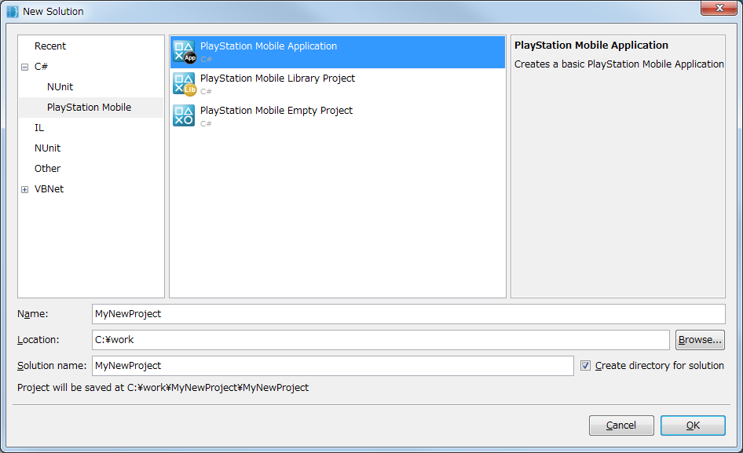

This document explains the procedure for creating a new project.
Contents
This section describes how to newly create a PSM solution.
- Select [Start a New Solution] on the PSM Studio Welcome page or select [File] - [New] - [Solution..] from the menu.
Note: In the Japanese version, select [ファイル] - [新規] - [ソリューション..].

- Select [C#] - [PlayStation(R)Mobile] from the tree view on the left side of the dialog, then select [PlayStation(R)Mobile Application] from the list in the middle window.
The projects that contain a set of files for executing programs are created with [PlayStation(R)Mobile Application].
Set the project name and the save location. After completing the settings, press the OK button.

- When you complete the settings, a new PSM project will be created.
To execute, perform a build and press F5 as mentioned in the previous chapter.
When creating, a screen like the following will be displayed.